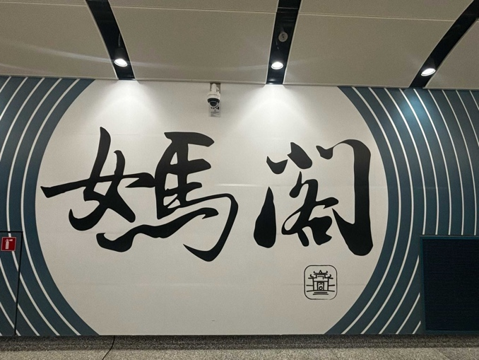

Written by 曾祥鑫
“你可知Macau，不知我真心”这句话说的就是位于祖国大陆南端的一座城市——澳门。澳门在大家的印象中是一座拥有殖民历史、西方文化较为突出的城市，似乎少有中华文化的熏陶。但事实上，在澳门这片土地上，中华文化依然保存下来，并与世界各地文化交融，其中最具代表性的便是妈阁庙。
在澳门的许多地方都能看到妈阁庙的身影，比如在澳门币中，1981年大西洋银行发行的伍圆纸币上，就印有妈阁庙侧门的正面照。
妈阁庙包括四座古庙：正殿、弘仁殿、观音阁和正觉禅林。妈阁庙的正门是一座由花岗岩砌成的牌楼，两侧立有石狮守护。门额上镌刻“妈祖阁”三字，两旁刻有对联“德周化宇，泽润生民”，寓意妈祖的恩德遍布天地，惠泽百姓。牌楼顶覆琉璃瓦脊，并以鳌鱼托举宝珠作装饰。进入山门后，还可见另一座花岗石建造的三间四柱冲天式牌坊，上题“南国波恬”四字，两侧篆书分别刻有“珠光”和“宝气”。其中“光”字特意采用异体字“炗”，在底部加“火”字，以强调火光之意，寓意庙内香火鼎盛，兴旺不绝。
然而，在1988年2月的一个凌晨，妈阁庙突发火灾，整个正觉禅林几乎被烧塌，殿内大量珍贵文物毁于一旦，包括一口有约200年历史的铜钟被烧熔，20多个牌匾、布幔、香案，以及关帝和韦陀菩萨神像、神龛、雕刻精美的闽式货船模型和百年大鼓等皆化为灰烬。更不幸的是，2016年又发生火灾，正觉禅林再次遭受严重破坏。
在2006年，澳门也曾面临一次景观危机。特区政府计划在妈阁庙正对面兴建葡文学校新大楼，并通过填海修建酒店和交通设施，引发社会担忧景观受损。议员批评政府只顾利益，忽视妈阁庙“面海”这一传统格局；而相比之下，当年澳葡政府兴建海事博物馆时尚能尊重庙宇景观。舆论指出，这种做法与澳门积极申遗、强调妈阁庙“守护内港入口”的宣传自相矛盾。最终，葡文学校搬迁计划被取消，危机才暂时解除。
因此，我呼吁世界各界人士共同保护妈阁庙，尊重历史格局，守护妈阁庙的“面海”景观。发展与保护不能以商业利益（如2006年建葡文学校的计划）牺牲文化遗产。让妈祖信仰与古迹得以延续，成为澳门世遗的永恒象征。唯有特区政府、中央政府、社会与公众齐心协力，方能共建文化传承的屏障。妈阁庙不仅是一座庙宇，更是中西文化交汇的见证，理应世代守护。
The saying, “You may know Macau, but not my true heart,” refers to a city at the southern tip of China—Macau. In many people’s minds, Macau is seen as a place shaped by colonial history, where Western culture is prominent and Chinese influence is less visible. Yet, in this very city, Chinese culture has been preserved and blended with global traditions. The most iconic example is the A-Ma Temple.
The A-Ma Temple is so significant that its image has appeared in everyday life—for example, on the 5 pataca banknote issued in 1981 by Banco Nacional Ultramarino, which features the temple’s side gate on its front.
The temple complex consists of four main halls: the Main Hall, Hongren Hall, Guanyin Pavilion, and Zhengjue Chanlin. The main entrance is a granite archway flanked by stone lions. The plaque above the gate bears the characters “A-Ma Temple,” with a couplet on either side: “Virtue spreads across the universe; Grace nourishes the people,” symbolizing the goddess’s blessings upon the world. The roof is decorated with glazed tiles and a motif of a fish holding a pearl. Beyond the gate stands another granite paifang (arch), inscribed with the phrase “Calm Waves in the Southern Country,” while its side inscriptions read “Pearl Light” and “Treasure Aura.” Notably, the character “光” (light) is written in the rare form “炗,” with an added “fire” radical to emphasize brightness, symbolizing the temple’s thriving incense and prosperity.
However, tragedy struck in February 1988, when a fire broke out in the early morning hours. The Zhengjue Chanlin was almost completely destroyed, and many irreplaceable cultural relics were lost: a 200-year-old bronze bell melted in the flames, over 20 plaques, banners, incense tables, statues of Guan Yu and Wei Tuo, intricately carved models of Fujian-style boats, and a century-old drum—all reduced to ashes. Sadly, another fire in 2016 caused further severe damage to the same hall.
In 2006, Macau also faced a crisis over the temple’s cultural landscape. The government planned to construct a new Portuguese-language school directly opposite the temple, alongside land reclamation for hotels and transport facilities. This raised fears that the traditional “facing the sea” layout would be lost. Critics argued the government prioritized profit over heritage, while pointing out that even the former Portuguese administration had preserved the temple’s view when building the Maritime Museum. Public opinion highlighted the contradiction between Macau’s UNESCO ambitions and this development plan. Eventually, the relocation of the Portuguese school was canceled, and the crisis was temporarily resolved.
For these reasons, I call upon people worldwide to protect the A-Ma Temple, to respect its historical setting, and to preserve its “facing the sea” landscape. Development must not come at the cost of cultural heritage (as nearly happened in 2006). The faith in Mazu and this historic monument should endure, standing as an eternal symbol of Macau’s World Heritage. Only through the joint efforts of the Macau SAR government, the central government, society, and the public can we build a true shield for cultural preservation. The A-Ma Temple is not just a temple—it is a testament to the meeting of Chinese and Western cultures, and it must be safeguarded for generations to come.